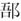

春秋公羊传卷六
庄公一
庄公元年
春，王正月，公何以不言即位？《春秋》君弑子不言即位。君弑则子何以不言即位？隐之也。孰隐？隐子也。
三月，夫人孙于齐。孙者何？孙犹孙也。内讳奔谓之孙。夫人固在齐矣，其言孙于齐何？念母也。正月以存君，念母以首事。夫人何以不称姜氏？贬。曷为贬？与弑公也。其与弑公奈何？夫人谮公于齐侯，公曰：“同非吾子，齐侯之子也。”齐侯怒，与之饮酒。于其出焉，使公子彭生送之。于其乘焉，搚干而杀之。念母者所善也，则曷为于其念母焉贬？不与念母也。
夏，单伯逆王姬。单伯者何？吾大夫之命乎天子者也。何以不称使？天子召而使之也。逆之者何？使我主之也。曷为使我主之？天子嫁女于诸侯，必使诸侯同姓者主之。诸侯嫁女于大夫，必使大夫同姓者主之。
秋，筑王姬之馆于外。何以书？讥。何讥尔？筑之礼也，于外非礼也。于外何以非礼？筑于外非礼也。其筑之何以礼？主王姬者必为之改筑。主王姬者则曷为必为之改筑？于路寝则不可。小寝则嫌。群公子之舍则以卑矣。其道必为之改筑者也。
冬十月乙亥，陈侯林卒。
王使荣叔来锡桓公命。锡者何？赐也。命者何？加我服也。其言桓公何？追命也。
王姬归于齐。何以书？我主之也。
齐师迁纪、郱、鄑、。迁之者何？取之也。取之则曷为不言取之也？为襄公讳也。外取邑不书，此何以书？大之也。何大尔？自是始灭也。
庄公二年
春王三月，葬陈庄公。
二年夏，公子庆父帅师伐馀丘。于馀丘者何？邾娄之邑也。曷为不系乎邾娄？国之也。曷为国之？君存焉尔。
秋七月，齐王姬卒，外夫人不卒，此何以卒？录焉尔。曷为录焉尔？我主之也。
冬十月二日，夫人姜氏会齐侯于郜。
乙酉，宋公冯卒。
庄公三年
四年春，王正月，溺会齐师伐卫。溺者何？吾大夫之未命者也。
夏四月，葬宋庄公。
五月，葬桓王。此未有言崩者何以书葬？盖改葬也。
秋，纪季以酅入于齐。纪季者何？纪侯之弟也。何以不名？贤也。何贤乎？纪季服罪也。其服罪奈何？鲁子曰：“请后五庙以存姑姊妹”。
冬，公次于郎。其言次于郎何？刺欲救纪而后不能也。
庄公四年
春王二月，夫人姜氏飨齐侯于祝丘。
三月，纪伯姬卒。
夏，齐侯，陈侯，郑伯遇于垂。
纪侯大去其国。大去者何？灭也。孰灭之？齐灭之。曷为不言齐灭之？为襄公讳也。《春秋》为贤者讳。何贤乎襄公？复仇也。何仇尔？远祖也。哀公亨乎周，纪侯谮之。以襄公之为于此焉者，事祖祢之心尽矣。尽者何？襄公将复仇乎纪，卜之曰：“师丧分焉”。“寡人死之，不为不吉也。”远祖者几世乎？九世矣。九世犹可以复仇乎？虽百世可也。家亦可乎？曰：“不可。”国何以可？国君一体也。先君之耻，犹今君之耻也。今君之耻，犹先君之耻也。国君何以为一体 ？国君以国为体，诸侯世，故国君为一体也。今纪无罪，此非怒与？曰：“非也。”古者有明天子，则纪侯必诛，必无纪者。纪侯之不诛，至今有纪者，犹无明天子也。古者诸侯必有会聚之事，相朝聘之道，号辞必称先君以相接，然则齐纪无说焉，不可以并立乎天下。故将去纪侯者，不得不去纪也，有明天子则襄公得为若行乎？曰：“不得也”。不得则襄公曷为为之，上无天子，下无方伯，缘恩疾者可也。
六月乙丑，齐侯葬纪伯姬。外夫人不书葬，此何以书？隐之也。何隐尔？其国亡矣，徒葬于齐尔。此复仇也，曷为葬之？灭其可灭，葬其可葬。此其为何葬奈何？复仇者非将杀之，逐之也。以为虽遇纪侯之殡，亦将葬之也。
秋七月。
冬，公及齐人狩于郜。公曷为与微者狩？齐侯也。齐侯则其称人何？讳与仇狩也，前此者有事矣，后此者有事矣，则曷为独于此焉？讥于仇者将壹讥而已。故择其重者而讥焉，莫重乎其与仇狩也。于仇者则曷为将壹讥而已？仇者无时焉可与通，通则为大讥，不可胜讥，故将壹讥而已，其余从同同。
庄公五年
五年春，王正月。
夏，夫人姜氏如齐师。
秋，倪黎来来朝。倪者何？小邾娄也。小邾娄则曷为谓之倪？未能以其名通也。黎来者何？名也。其名何？微国也。
冬，公会齐人、宋人、陈人、蔡人伐卫。此伐卫何？纳朔也。曷为不言纳卫侯朔？辟王也。
庄公六年
六年春，王三月，王人子突救卫。王人者何？微者也。子突者何？贵也。贵则其称人何？系诸人也。曷为系诸人？王人耳。
夏六月，卫侯朔入于卫。卫侯朔何以名？绝。曷为绝之？犯命也。其言入何？篡辞也。
秋，公至自伐卫。曷为或言致会？或言致伐？得意致会，不得意致伐。卫侯朔入于卫，何以致伐？不敢胜天子也。
螟。
冬，齐人来归卫宝。此卫宝也，则齐人曷为来归之？卫人归之也。卫人归之，则其称齐人何？让乎我也。其让乎我奈何？齐侯曰：“此非寡人之力，鲁侯之力也！”
庄公七年
七年春，夫人姜氏会齐侯于防。
夏四月辛卯，夜，恒星不见，夜中，星陨如雨。恒星者何？列星也。列星不见何以知？夜之中星反也。如雨者何？如雨者非雨也。非雨则曷为谓之如雨？不修《春秋》曰“雨星不及地尺而复”。君子修之曰：“星陨如雨。”何以书？记异也。
秋，大水。
无麦苗。无苗则曷为先言无麦而后言无苗？一灾不书，待无麦然后书无苗。何以书？记灾也。
冬，夫人姜氏会齐侯于谷。